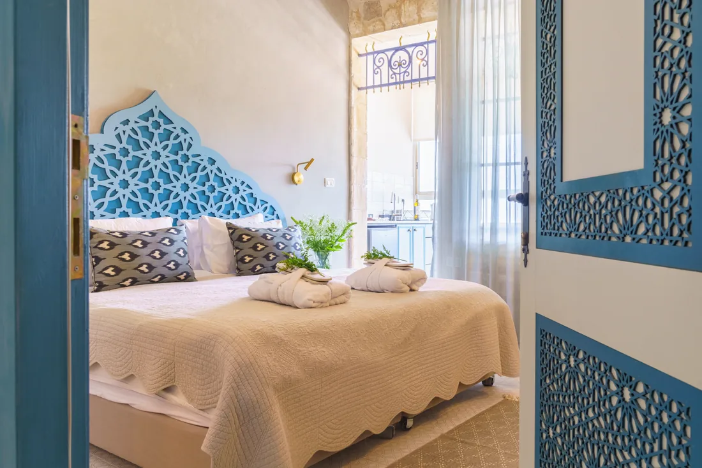
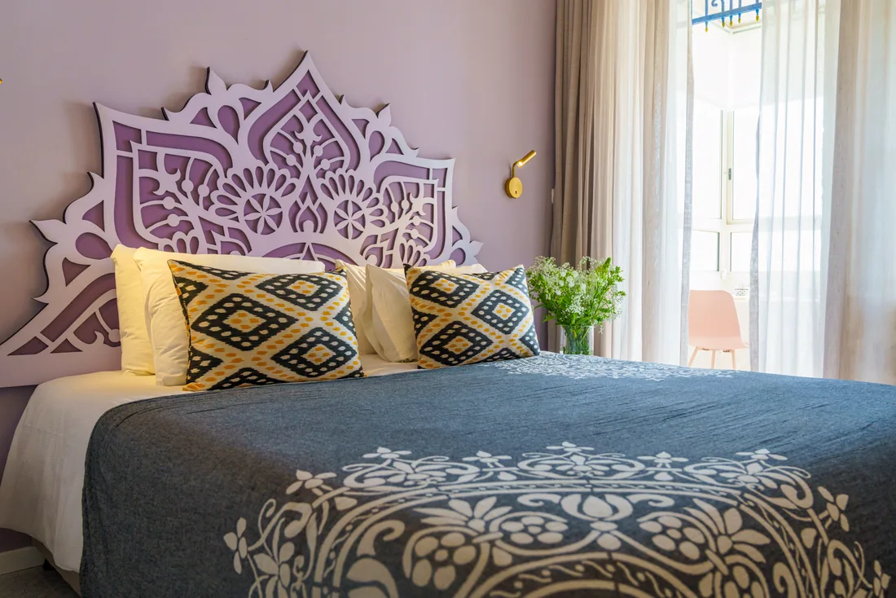
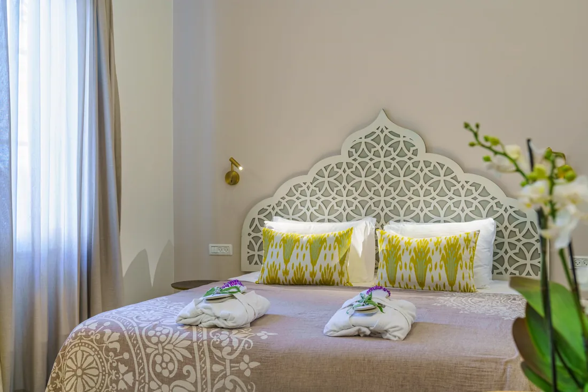
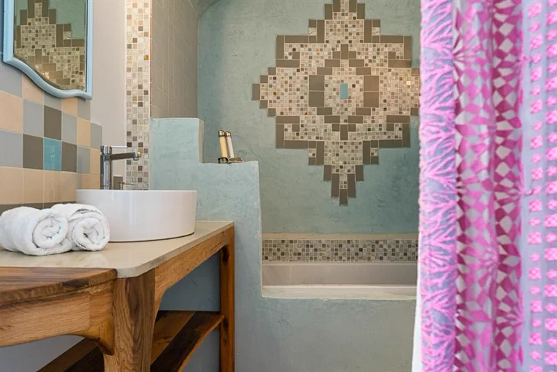
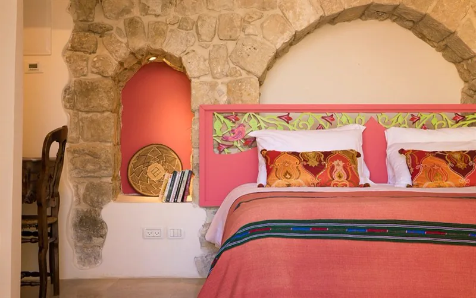
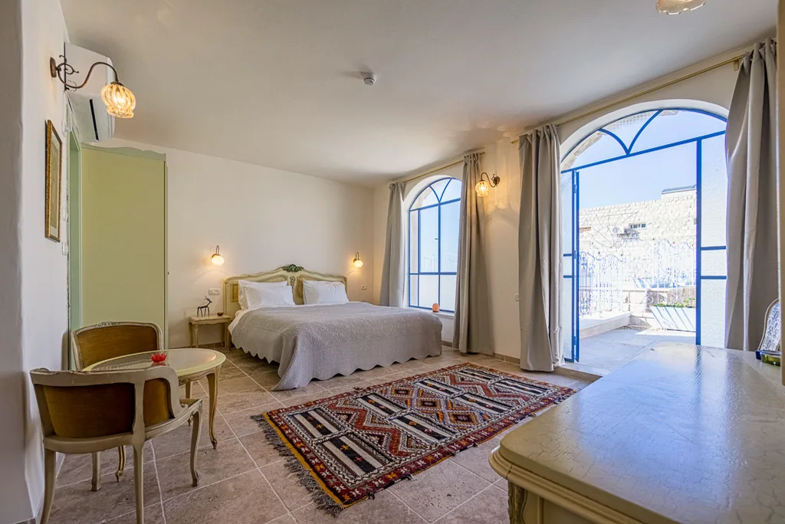
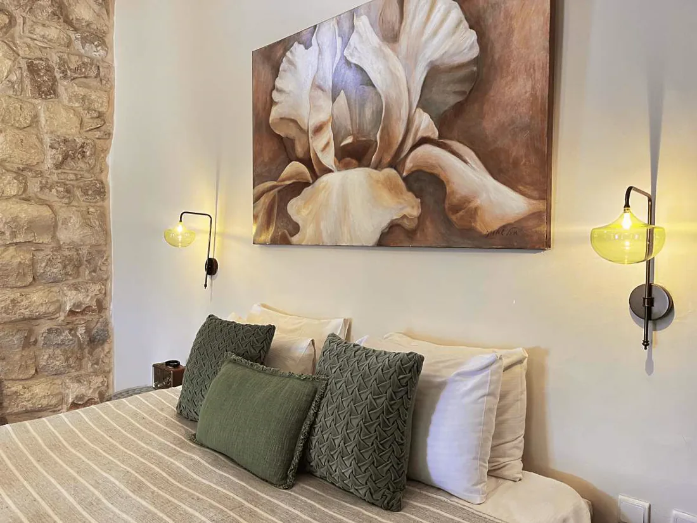
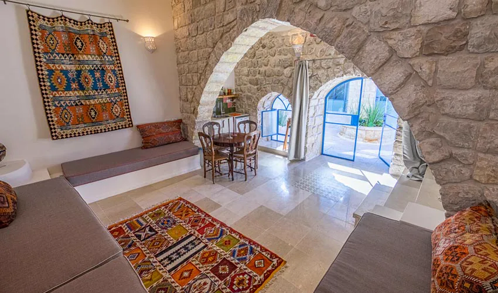
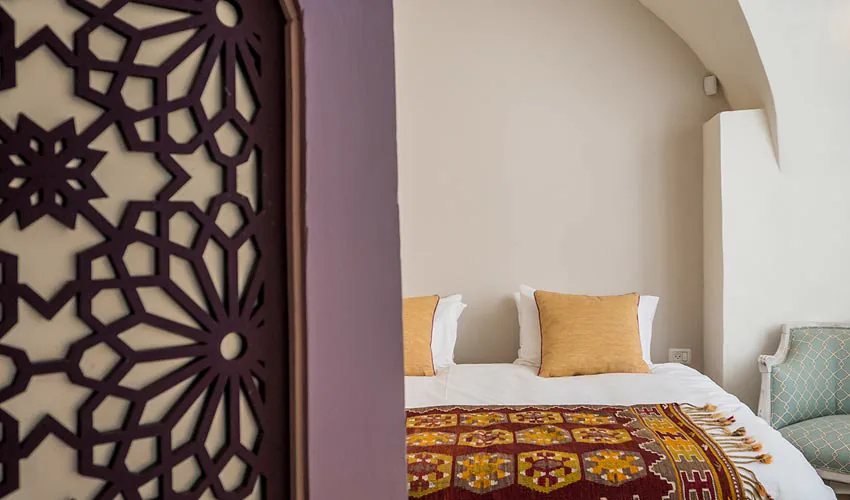
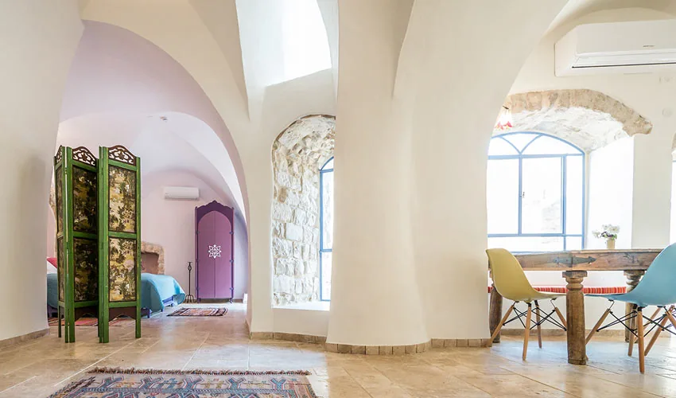

The Tree of Life · ten suites
Our Rooms
Each suite carries the name of a Sephirah — discover the room behind it.
Home · Our Rooms
Ten suites, each named for a Sephirah of the Tree of Life — every room its own character in Safed stone, hand-collected furniture and the famous Tzfat blue.

Chokhmah
חכמהWisdom — the first spark of thought
A bright suite with a blue Safed-stone lattice headboard and a carved door.
Reserve Chokhmah
Binah
בינהUnderstanding, deep insight
A calm suite with a purple wooden mandala above the bed and a balcony nook.
Reserve Binah
Da'at
דעתKnowledge, the point of connection
A delicate suite with a white lattice headboard, orchids and soft light.
Reserve Da'at
Chesed
חסדLoving-kindness without limit
A generous suite with a mosaic-tiled bathroom and an oriental medallion.
Reserve Chesed
Gevurah
גבורהStrength, boundaries, focus
A powerful suite with an arched Safed-stone niche and coral linens.
Reserve Gevurah
Tiferet
תפארתBeauty, harmony, the heart
The heart of the house: a broad suite with blue-framed arched windows and a kilim rug.
Reserve Tiferet
Netzach
נצחEmotion, endurance, victory
A warm suite with an iris painting, a stone wall and amber lamps.
Reserve Netzach
Hod
הודSplendour, gratitude
A vaulted suite with stone arches, kilim rugs and a view onto the courtyard.
Reserve Hod
Yesod
יסודFoundation, connection, grounding
An intimate suite with a purple geometric screen and a kilim throw.
Reserve Yesod
Malchut
מלכותSovereignty, presence
The most spacious suite: a vaulted stone apartment with a stone window and a dining nook.
Reserve Malchut